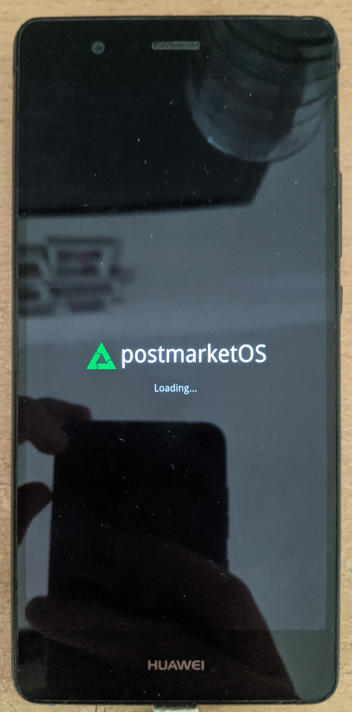

Huawei P9 lite (huawei-venus)
Jump to navigation
Jump to search
|
 Boot screen, Weston | |
| Manufacturer | Huawei |
|---|---|
| Name | P9 lite |
| Codename | huawei-venus |
| Released | 2016 |
| Category | testing |
| Original software | Android |
| Original version | 6.0 (EMUI 4.1) |
| postmarketOS kernel | 4.1.18 |
| Hardware | |
| Chipset | HiSilicon Kirin 650 |
| CPU | 4 x 2.0 GHz Cortex-A53 & 4 x 1.7 GHz Cortex-A53 |
| GPU | Mali-T830MP2 |
| Display | 1080x1920 LCD |
| Storage | 16 GB |
| Memory | 2 GB |
| Architecture | aarch64 |
| Unixbench Whet/Dhry score | 0.0 |
{kind=link}
| USB Networking |
Works
|
|---|---|
| Flashing |
Works
|
| Touchscreen |
Works
|
| Display |
Partial
|
| WiFi | |
| FDE | |
| Mainline | |
| Battery |
Works
|
| 3D Acceleration | |
| Audio | |
| Bluetooth | |
| Camera | |
| GPS | |
| Mobile data | |
| SMS | |
| Calls | |
| USB OTG | |
| NFC | |
| Accelerometer | |
|---|---|
| Magnetometer | |
| Ambient Light | |
| Proximity | |
| Hall Effect | |
| Barometer | |
| Power Sensor | |
| Camera Flash | |
|---|---|
| Keyboard | |
| Touchpad | |
| USB-A | |
| HDMI/DP | |
| Ir TX | |
| Ir RX | |
| Stylus | |
| Haptics | |
| Ethernet | |
| FOSS bootloader | |
Contents
Contributors
- TAO_Croatia
Users owning this device
How to enter flash mode
To unlock the bootloader, a working method is using PotatoNV.
Hold Power + Volume Down to boot into fastboot mode
Additional Info
The display brightness can be set by writing a value between 0 and 255 to /sys/devices/platform/hisi_fb.1048577/leds/lcd_backlight0/brightness.
Initially it contains the value 102, but the display is dark. Sending a value one time seems to wake up the display.
$ sudo -i
# echo 255 > /sys/devices/platform/hisi_fb.1048577/leds/lcd_backlight0/brightness
See also
- pmaports!2351 Initial merge request